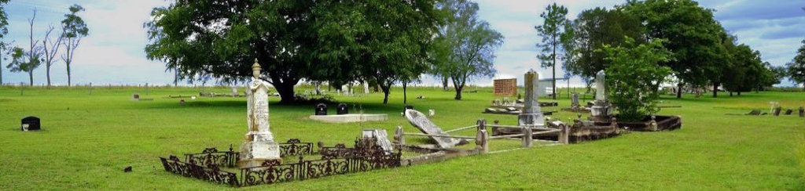
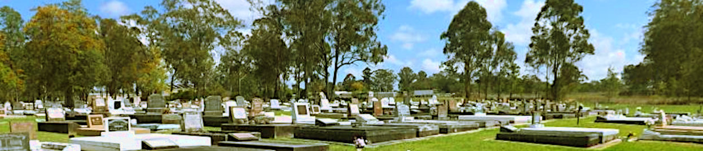
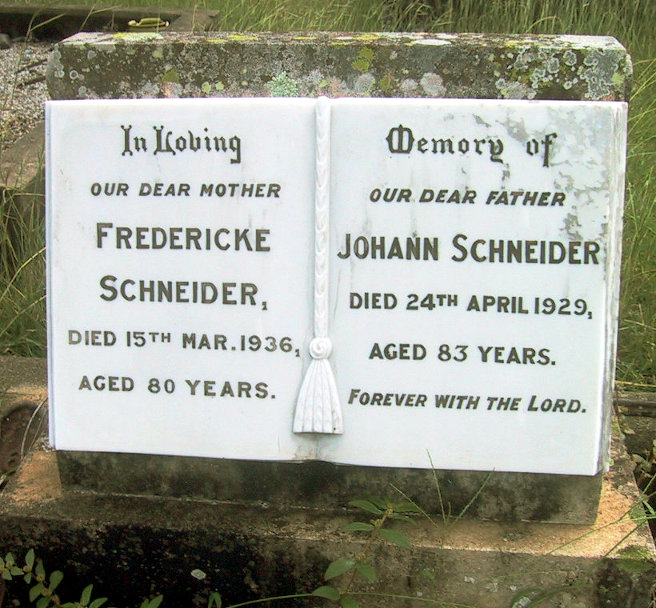

-
Some Final Resting Places of Our Family
Johann Georg and Heinricke Margaretha (Lauer) Schneider
A gathering of family members on the original property and at the grave of Johann Georg Schneider.
The first Schneiders passed away before the creation of suitable local cemeteries, so they were buried on the family properties of these early settlers.
Johann Georg Schneider, born 25 Oct 1810 in Ellhofen, died 4 Apr 1878, aged 67
buried on his property at Franklyn Vale near Mt Walker
Wondai Cemetery
Son of Johann Heinrich Schneider jr,
Ben, and his wife AlmaBenjamin Walter Schneider (Ben),
born 31 Dec 1903 in Roadvale,
died 29 May 1950, aged 46
Alma Dora (Pieper) Schneider,
born 9 Oct 1901 in Vernor,
died 6 Dec 1984, aged 83Mutdapilly Cemetery
Friederike Sophie,
daughter of Johann Georg Schneider sr.Friederike Sophie (Schneider) Hinrichsen,
born 14 Oct 1842 in Eberstadt,
died 16 Mar 1875, aged 32
Coleyville Cemetery, Coleyville Cemetery Road, Boonah, Qld
The Coleyville Cemetery
since 1892
The Coleyville Cemetery was originally connected to the Coleville Baptist Church, formerly known as Mt Walker. The following family members found their final resting place at Coleyville Cemetery:
The daughter of Johann Georg Schneider (senior):
Christine "Sophie" (Schneider) Dickfos, born 26 Nov 1843 in Eberstadt, died 26 Jan 1917, aged 73
Johann Friedrich "August" Dickfos, born 28 Dec 1842 in Gerswalde, died 8 May 1926, aged 83
The daughter of Johann Georg Schneider (senior):
"Christine" Elisabeth (Schneider) Dickfos, born 17 Sep 1850 in Eberstadt, died 12 Jan 1942, aged 91
Johann "Carl" Gottlieb Dickfos, born 5 Apr 1850 in Templin, died 3 Jan 1937, aged 86
The parents of Annie Lobegeiger, the wife of Johann Heinrich Schneider (junior):
Friedrich William August (Fred) Lobegeiger, born 7 Nov 1851 in Charlottenhof, died 26 Aug 1913, aged 61
Ernestine Fredericka Amelia (Wolter) Lobegeiger, born 11 July 1852 in Hassleben, died 23 June 1923, aged 70
The grandfather of Annie (Lobegeiger) Schneider:
Friedrich Wilhelm August Lobegeiger, born 19 July 1820 in Charlottenhof, died 26 Apr 1893, aged 72
Kalbar General Cemetery, Munbilla Road, Kalbar, Qld

The Kalbar General Cemetery
The following family members found their final resting place at Kalbar General Cemetery:
The grandson of Johann Georg Schneider (senior):
Johann Heinrich Schneider (Henry junior), born 14 July 1870 in Rosewood, died 14 Apr 1946, aged 75
The daughter of Johann Heinrich Schneider (Henry junior):
Lilly Annie (Schneider) Zimmermann, born 15 Nov 1905 in Roadvale, died 16 Aug 1949, aged 43
Harold James Zimmermann, born 9 Dec 1905 in Kalbar, died 1 June 1971, aged 65
The sister of Ernestine (Schulz) Pieper and her husband Victor Francis Pfeffer:
Frederika Christine (Schulz) Pfeffer, born 8 Feb 1851 in Menkin, died 23 Nov 1922, aged 71
Victor Francis Pfeffer, born 18 Dec 1842 in Neckarsulm, died 16 June 1922, aged 80
Engelsburg Baptist Cemetery, 49 Edward Street, Kalbar, Qld
The Engelsburg Baptist Cemetery
from 1885 to 1923
The following family members found their final resting place at Engelsburg Baptist Cemetery:
The son of Johann Georg Schneider (senior):
Johann Heinrich Schneider (Henry senior), born 23 Sep 1836 in Eberstadt, died 10 June 1905, aged 68
Wilhelmine (Topp) (Lobegeiger) Schneider's brother and his wife:
Wilhelm Friedrich Ferdinand Topp, born 1 Mar 1840 in Götschendorf, died 4 Sep 1915, aged 75
Emilie Caroline Wilhelmine (Leberenz) Topp, born 11 Nov 1843 in Neuhaus, died 27 May 1917, aged 73
The wife of Johann Heinrich (Henry) Schneider (junior):
Annie (Lobegeiger) Schneider, born 22 Oct 1871 in Ipswich, died 7 May 1919, aged 47
The grandmother of Annie (Lobegeiger) Schneider:
Caroline Wilhelmine Louise (Witte) Lobegeiger, born 13 Sep 1817 in Templin, died 4 Apr 1889, aged 71
The sister of Ernestine (Schulz) Pieper:
Wilhelmine (Schulz) Zimmermann, born 30 Jan 1844 in Menkin, died 4 Dec 1912, aged 68
Vernor German Baptist Church Cemetery, 59 Old Fernvale-Lowood Road, Vernor (Fernvale), Qld
The Vernor German Baptist Church Cemetery
since 1876
There are quite a few family members who found their final rest in the Vernor Baptist Church Cemetery:
The wife of Friedrich Suchting (who was buried in Murgon Cemetery):
Wilhelmine Johanne Emilie (Riek) Suchting, born 15 Feb 1852 in Gerswalde, died 7 July 1906, aged 54
Wilhelmine and Friedrich's daughter:
Alvina Suchting, born 14 Sep 1884 in Vernor, died 1 Dec 1893, aged 9
Wilhelmine and Friedrich's daughter and her husband:
Anna (Suchting) Pieper, born 10 Feb 1873 in Fernvale, died 4 Nov 1924, aged 51
Rudolph Pieper, born 11 Aug 1875 in Vernor, died 4th Oct 1945, aged 70
Rudolph Pieper's parents:
Johann Friedrich Wilhelm Pieper, born 27 Jan 1825 in Günterberg (Angermünde), died 1 Dec 1896, aged 71
Ernestine (Schulz) Pieper, born 21 July 1853 in Menkin, died 10 Aug 1916, aged 63
Ernestine's parents:
Wilhelm August Schulz, born 18 Sep 1815 in Germany, died 9 Oct 1902, aged 87
Christine (Procase) Schulz, born 19 July 1815 in Grimme, died 19 Mar 1896, aged 80
Rudolph Pieper's brother and his wife:
Adolph Pieper, born 10 Dec 1882 in Vernor, died 26 Feb 1953, aged 70
Augusta (Schroeder) Pieper, born 2 Apr 1883 in Tarampa, died 26 Apr 1947, aged 64
Murgon Cemetery, Murgon, Qld
The Murgon Cemetery
The following family members found their final resting place at Murgon Cemetery:
The husband of Wilhelmine (Riek) Suchting (who was buried in Vernor Cemetery):
Johann Hinrich Friedrich (Frederick) Suchting, born 10 Mar 1838 in Ahrensbök, died 26 June 1917, aged 79
The daughter of Johann Heinrich Schneider senior and his 1st wife, Rosina Friederike Eckert (and husband, August):
Friederike Christina (Schneider) Lobegeier, born 5 June 1863 in Eberstadt, died 31 Mar 1938, aged 74
August Carl Hermann Lobegeier, born 17 July 1859 in Templin, died 24 Dec 1936, aged 77
Friederike and August Lobegeier's daughter and her husband:
Adina (Alena) (Lobegeier) Kratzmann, born 8 June 1888 in Boonah, died 30 Jan 1953, aged 64
Friedrich Wilhelm Kratzmann, born 11 Nov 1882 in Toowoomba, died 24 Feb 1967, aged 84
Friederike and August Lobegeier's son and his wife:
Gottlieb (George) Lobegeier, born 1 Jan 1893 in Boonah, died 22 May 1977, aged 84
Emmy Wilhelmine Marie (Rohde) Lobegeier, born 24 Sep 1899 in Unna NRW, died 29 Nov 1980, aged 81
Friedrich Suchting's son:
Adolph Suchting, born 19 May 1886 in Qld, died 5 Nov 1931, aged 45
Friedrich Suchting's son and his second wife:
Alfred Suchting, born 17 Aug 1889 in Qld, died 14 May 1947, aged 57
Hilda May (Short) Suchting, born 25 Jun 1899 in Qld, died 4 July 1973, aged 74
Friedrich Suchting's son John's wife:
Matilda (Dennien) Suchting, born 6 Mar 1879 in Germany, died 4 Feb 1937, aged 57
Boonah General Cemetery, Cnr Elliot Rd and Gorkow Rd, Boonah, Qld
The Boonah General Cemetery
The following family members found their final resting place at Boonah General Cemetery:
The son of Johann Georg Schneider (senior), John and his wife Fredericke:
Johann Georg Schneider (junior), born 23 Dec 1845 in Eberstadt, died 24 Apr 1929, aged 83
Auguste Wilhelmine Marie Ernestine 'Fredericke' (Henselin) Schneider, born 12 July 1855 in Germany, died 15 Mar 1936, aged 80
The son of Johann Georg Schneider (senior), Fred and his wife Caroline:
Gottfried Friedrich (Fred) Schneider, born 26 Jan 1841 in Eberstadt, died 4 July 1934, aged 93
Johanna 'Caroline' Wilhelmine (Dickfos) Schneider, born 4 Mar 1855 in Strehlow, died 16 July 1952, aged 98
The daughter Albert John Kuss and Martha (Schneider) Kuss (sister of Johann Heinrich junior)
and her husband Alfred Pieper, son of Wilhelm Friedrich Erdmann Pieper (half brother of Rudolph Pieper):
Violet Adelaiide (Kuss) Pieper, born 15 Dec 1900, died 5 Jan 1992, aged 91
Alfred Pieper, born 15 Oct 1898 in Qld, died 22 Aug 1994, aged 95
The daughter of Gottfried Friedrich (Fred) Schneider, Anna and her husband August:
Anna (Schneider) Korner, born 26 May 1873 in Qld, died 6 Sep 1959, aged 86
August Korner, born 25 Aug 1871 in Qld, died 14 Feb 1972, aged 90
The daughter of Gottfried Friedrich (Fred) Schneider, Minnie and her husband James:
Wilhelmina “Minnie” (Schneider) Harding, born 20 Mar 1878 in Mt Walker, died 5 oct 1978, aged 100
James Harding, born 13 Apr 1871 in Ipswich, died 28 Apr 1943, aged 72
The son of Gottfried Friedrich (Fred) Schneider, John and his wife Elizabeth:
John W Schneider, born 1 Oct 1882 in Qld, died 18 May 1966, aged 83
Elizabeth Mary (Niebling) Schneider, born 22 July 1885 in Qld, died 25 Mar 1959, aged 73
The son of Gottfried Friedrich (Fred) Schneider, Friedrick and his wife Amelia:
Friedrick Wilhelm Schneider, born 29 May 1887 in Qld, died 29 Aug 1978, aged 91
Amelia (Rieck) Schneider, born 24 Sep 1884 in Kalbar, died 14 Nov 1956, aged 72
John, the son of Johann Georg Schneider (junior):
John Alfred Schneider, born 16 May 1893 in Qld, died 10 June 1947, aged 54
The son of Harald Zimmermann and Lilly Annie (Schneider), daughter of Johann Heinrich junior:
Ronald James Zimmermann, born 9 Apr 1926 in Kalbar, died 4 June 1955, aged 29
Johann Georg Schneider (junior) and Auguste Wilhelmine Marie Ernestine 'Fredericke' (Henselin)

{kind=link}
{kind=link}
{kind=link}
{kind=link}
{kind=link}
{kind=link}
{kind=link}
{kind=link}
{kind=link}
{kind=link}
{kind=link}
{kind=link}
{kind=link}
{kind=link}
{kind=link}
{kind=link}
{kind=link}
{kind=link}
{kind=link}
{kind=link}
{kind=link}
{kind=link}
{kind=link}
{kind=link}
{kind=link}
{kind=link}
{kind=link}
{kind=link}
{kind=link}
{kind=link}
{kind=link}
{kind=link}
{kind=link}
{kind=link}
{kind=link}
{kind=link}
{kind=link}
{kind=link}
{kind=link}
{kind=link}
{kind=link}
{kind=link}
{kind=link}
{kind=link}
{kind=link}
{kind=link}
{kind=link}
{kind=link}
About Us
We are the descendants of Anglo-Scottish-Prusso-Germanic Australian migrants who settled in the newly formed colonies of New South Wales and Queensland in the nineteenth century. The idea behind these pages is to present the stories and characters of those early settlers along with information about their origins, descendants, families, whereabouts and activities.There are often themes running through their struggles and achievements telling a tale of resourcefulness and hardships in an alien world. The paradox of Australia as an ancient and raw continent and as a 'New World' portrays a collision of ideals and realities yet still shows a continuity in how those people dealt with everyday life.